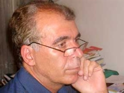

پذيرش > سایت نوشته ها > قصه تلخ دختران شیرازی، دردناک تر از مصیبت آمنه


 قصه تلخ دختران شیرازی، دردناک تر از مصیبت آمنه قصه تلخ دختران شیرازی، دردناک تر از مصیبت آمنه
19 مرداد 1390 - شیرزاد عبداللهی - نسخه قابل چاپ
خانم آمنه بهرامی با بزرگواری از قصاص مرد اسید پاش گذشت و همه کار او را ستودند. اما در این دیار دختران و پسران دیگری هم هستند که دردشان دست کمی از آمنه ندارد و به دست فراموشی سپرده شده اند. صورت های چون گل آنها سوخت و دفرمه شد، اما کسی به خاطر این جنایت به قصاص محکوم نشد تا آنها نیز ببخشند یا نبخشند. اگر اظهارات تصادفی رئیس سازمان بازرسی در یک جلسه تصادفی نبود، حتی خبر به رسانه ها هم نمی رسید.
با دیدن چهره سوخته از اسید آمنه و پیام ها و سخنان گرم مردم و مسئولان، سیمای مریم نوروزی، لیلا کهن، پریسا طاهری، ثمانه عظیمی، محمد حسن شیرویه، رضا حقیقی و نرگس حیدری در ذهنم جان می گیرد. آنها زمان حادثه فقط 8 سال داشتند. کلمات از توصیف این جنایت ناتوانند. باید به چشمهای درخشان این کودکان در قاب های متلاشی شده صورتهایشان نگاه کرد و بر خود لرزید.
اتفاقی که برای این دخترکان و پسرکان مظلوم افتاد، نوعی جنایت بود، جنایت فقط این نیست که با ضربه چاقو کسی را بکشی یا به روی کسی اسید بپاشی. اینکه در یک دبستان روستایی برای گرم کردن کلاس به طور غیرقانونی از چراغ والور استفاده شود، جنایت خاموش است. کودکان درودزن قربانی بی تدبیری و مدیریت غیر علمی آموزش و پرورش شدند. همچنان که پیش از آن در سال 83، سیزده کودک روستای سفیلان چهار محال و بختیاری در آتش بی سروسامانی این وزارتخانه سوختند.
دانش آموزان کلاس دوم دبستان شهید رحیمی روستای درودزن در فاصله یکصد کیلومتری شیراز روز 14 آذر سال 85 دور بخاری علاء الدین کلاس حلقه زده بودند که ناگهان بخاری آتش گرفت و فاجعه اتفاق افتاد. جزئیات این حادثه به طور دقیق اعلام نشد. در مصاحبه های رسمی گفته شد که بر اثر شیطنت دانش آموزان چراغ واژگون و نفت آن در کف کلاس پخش شد و شعله های سرکش راه خروج دانش آموزان را بست. بچه ها از ناحیه صورت و دست به شدت دچار سوختگی شدند. خبر آتشسوزی این مدرسه، تا 15 روز بعد از وقوع از سوی روابط عمومی وزارت اعلام نشد تا اینکه "نیازی"، رییس وقت سازمان بازرسی کل کشور در جلسهای که جمعی از کارشناسان مسئول واحدهای ارزیابی عملکرد و پاسخگویی به شکایات سازمان آموزش و پرورش استانهای کشور, در آن حضور داشتند، خبر را بی هوا اعلام کرد و چنین شد که خبر بعد ملی پیدا کرد. بچه ها به مرکز سوختگی قطبالدین شیراز منتقل شدند و توسط پزشکان این مرکز دولتی مورد مداوا قرار گرفتند.
ترمیم سوختگی صورت نیاز به ده ها بار عمل جراحی دارد. گاهی درمان بیش از ده سال طول می کشد. مادر نرگس حیدری به سایت آفتاب گفت: "پس از این حادثه بچههایی که سوخته بودند از سوی دولت بیمه شدند و هزینه سرویس مدرسه و مادریار را که در مدرسه از آنها مراقبت کند و کارهای شخصیشان را انجام دهد را هم پرداخت میکنند". به گفته وکیل خانواده های دانش آموزان، حکم محکومیت آموزش و پرورش فارس از سوی دادگاه صادر شده ولی این نهاد در اجرای حکم تأخیر و تعلل می کند. بر اساس نظریه پزشکی قانونی، برای دانشآموزان صدمه دیده دیه تعیین شده است. پیگیری خانواده ها باعث شد که بعد از 5 سال موضوع دوباره در رسانه ها مطرح شود.
در واکنش به انتشار نظر خانواده ها، حمیدرضا حاجی بابایی با انتقاد از عملکرد صدا و سیما بابت تهیه گزارش از وضعیت این دانشآموزان گفت: «چطور شد که صداوسیما بعد از پنج سال یادش افتاد که برود فیلمی در این باره تهیه کند، وظیفه همه ما هست که برویم و مشکلات آنها را حل کنیم». حاجی بابایی درباره حکم دیه این کودکان نیز گفت: «حکم دادگاه آنها صادر شده و سعی میکنیم تا ریال آخر را بپردازیم».
وزرا تغییر می کنند و مسئولان روابط عمومی عوض می شوند اما نگاه وزیر و مسئولان به رسانه ها تغییر نمی کند. از نظر آنها رسانه ها فقط باید سخنراتی های مقامات را پخش کنند و همه چیز را خوب و زیبا و در حال پیشرفت نشان دهند. وقتی وزیر در مورد "سیما" با این بدبینی سخن می گوید تکلیف رسانه های مستقل و منتقد معلوم است!
مرکز اطلاع رسانی آموزش و پرورش در نامه ای به خبرگزاری فارس روایت دیگری از ماجرای پرداخت دیه بیان کرد و توپ را به زمین استانداری فارس انداخت: «استانداری فارس موظف به پرداخت دیه دانشآموزان حادثهدیده در آتشسوزی روستای درودزن شده البته تعیین میزان دیه توسط مقام قضایی اخیراً صادر شده است». به گزارش مرکز اطلاع رسانی و روابط عمومی آموزش و پرورش، در سفر دوم هیئت دولت به آن استان مصوب شد که استانداری موظف به پرداخت دیه آن دانشآموزان است. اما موسوی وکیل خانواده های صدمه دیدگان می گوید : «در حال حاضر آموزش و پرورش فارس وعده داده است که حکم را اجرا کند ولی هنوز این حکم اجرا نشده است».
من از جزئیات پرونده اطلاع ندارم اما به گمان من خانواده ها تباید به گرفتن دیه اکتفا کنند، انها باید علاوه بر دیه، دیه از بین رفتن زیبایی چهره ها و پرداخت کلیه هزینه های آتی درمان و نیز مجازات مسئولانی که در ایجاد این حادثه مقصر بودند را خواستار شوند. دیدن عکس های این کودکان قلب هر انسانی را به درد می آورد. ممکن است نهایتا آموزش و پرورش یا استانداری یا نهاد دیگری دیه این کودکان را بپردازد اما تاوان زیبایی از دست رفته آنها را چه کسی خواهد داد؟ اخیرا فتوای یکی از مراجع را دیدم که در مورد خسارت به زیبایی فرموده بود: «ظاهراً ادلهی شرع این است که باید برای جبران آن دیه بدهد ولی اگر مجنی علیه مجبور شود هزینههایی برای رفع نقایص ظاهری متحمل شود که در عرف آن را ضروری بداند و این هزینهها از دیه زیادتر باشد میتواند مقدار اضافی را نیز از جانی بگیرد. اضافه بر این اگر نقص زیبایی شدید باشد احتیاط دادن ارش است».
مقصران این حادثه و حوادث مشابه هم باید معلوم و مجازات شوند تا دیگر چنین حوادثی تکرار نشود. در قضیه درودزن کدام مسئول و مدیر آموزش و پرورش به خاطر کوتاهی در انجام وظیفه مجازات شد؟ طبق آیین نامه های آموزش و پرورش در همان زمان استفاده از والور برای گرم کردن کلاس غیر قانونی بوده است. سال پیش که بر اثر اتصال سیم برق پوسیده خوابگاه دانش آموزان چاه بهرام زاهدان آتش گرفت، یک دانش آموز در دود خفه شد که تا کنون نامش هم اعلام نشده است. آقای حاجی بابایی در توجیه این حادثه دردناک گفت که در هر کشوری ممکن است چنین اتفاقی بیفتد. البته فرموده ایشان در کلیات سخن درستی است اما ایشان باید توضیح دهند در کدام کشور دنیا نزدیک به 100 دانش آموز را در خوابگاه 48 متری جا میدهند؟
در حادثه آتش سوزی شبانه روزی چاه بهرام که سال 89 اتفاق افتاد اگر ساختمان خوابگاه از نظر مساحت استاندارد بود، اگر سیم های برق پوسیده نبودند، اگر فیوز برق سالم بود و به موقع برق را قطع می کرد، اگر سرپرست مجتمع یا معاون او به عنوان کشیک شب حضور داشتند، اگر کپسول آتش نشانی در دسترس بود و دانش آموزان، آموزش لازم برای این گونه حوادث دیده بودند و ... آتش سوزی رخ نمی داد و اگر هم رخ می داد قابل کنترل بود و به مرگ یک دانش آموز و مصدوم شدن تعداد زیادی از دانش آموزان منجر نمی شد. یا در مورد حادثه درودزن در کدام کشور برای گرم کردن کلاس از والور استفاده می کنند؟ اگر در مدرسه درودزن مرودشت به جای والور از بخاری استاندارد استفاده می شد، قطعا بخاری واژگون نمی شد و 8 دانش آموز در آتش بی تدبیری مقامات آموزش و پرورش نمی سوختند.
بحث استانداردسازی سیستم سرمایش و گرمایش مدارس سالهاست که در آموزش و پرورش جاری است. مشکل هم فقط کمبود اعتبار و بودجه نیست. مساله این است که مدیران ما آنقدر مشغولیت های اضافی دارند که به این کارهای پیش پا افتاده نمی رسند و فکرشان دنبال کارهای بسیار بزرگ و غیرمرتبط و دارای جنبه تبلیغاتی است.
خبرآنلاین
ارسال به
بالاترین
،
توییتر
،
فریندفید
،
فیسبوک
در همين بخش :
 یک خبر تلخ؟ یک قانونشکنی؟ یک تصمیم بخشنامهای جدید؟ یک خبر تلخ؟ یک قانونشکنی؟ یک تصمیم بخشنامهای جدید؟
چرا بایست به سکسوالیته پرداخت؟ / نفیسه آزاد
آزارجنسی خانگی؛ «قربانی» نه، «نجات یافته»
زنان، بزرگترین بازندگان بهار عرب
سانسور از دیدگاه جنسیتی/الهه امانی
ديگر بخش ها :
طرح یک میلیون امضا
|
مقالات
|
سایت نوشته ها
|
اخبار
|
گزارش كمپين
|
گفت و گو
|
علیه سکوت
|
كوچه به كوچه
|
نامه های شما
|
گزارش ویژه
|
گفتگو با اعضا
|
ویژه سالگرد کمپین
|
تصویر برابری
|
دل آرام علی
|
تریبون
|
مقالات
|
تاریخ شفاهی
|
خارج از چارچوب
|
کتابخانه
|
درباره کمپین
|
کمپین در شهرها
|
کمپین در بند
|
صدای تغییر
|
ویژه 22 خرداد
|
لایحه حمایت از خانواده
|
گالری
|
عشا مومنی
|
امیر یعقوبعلی
|
خدیجه مقدم
|
راحله عسگری زاده و نسیم خسروی
|
پروین اردلان،جلوه جواهری، مریم حسین خواه، ناهید کشاورز
|
زینب پیغمبرزاده
|
سعیده امین، سارا ایمانیان، محبوبه حسین زاده، ناهید کشاورز و همایون نامی
|
احترام شادفر
|
نسیم سرابندی زاده،فاطمه دهدشتی
|
وبلاگ مهمان
|
پرونده خرم آباد
|
دستگیری ها
|
مریم مالک
|
پرستو اللهیاری
|
مهرنوش اعتمادی
|
سمیه رشیدی
|
Other Languages
|
همراهان
|
«فراخوان کمپین ده روز با بهاره هدایت»
| English
|